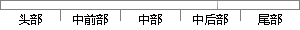

）该算法 相比较 灰度差分法，计算量相当，
片段位置图

相似结果
相似片段：
, y+1)像元的位置关系，其评价函数为： (2-5) 2-5式中：f(x, y)对应于像元(x, y)的灰度值，X、Y分别表示感兴趣图像区域的行数和列数，当取最大值时聚焦。 该算法和灰度差分法相比，计算量相当，但由于Roberts梯度法多考虑了一个相邻的像元，相关性和精度都比灰度差分要好。 3、灰度方差法[20] 灰度方差法是利用灰度变化的平均程度来进行清
| 对比库： | WriteCheck云资源库 |
| 来源： | www.yangsky.com 查看来源 |
| 发布时间： | 2014-01-18 |
| 相似率 | 76.92% （轻度抄袭） |